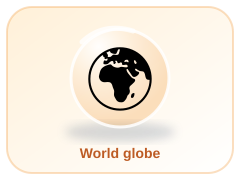
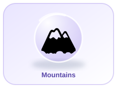
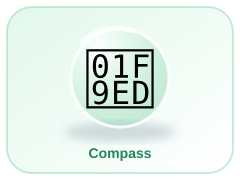

🌍 Continents
Locate the seven continents and compare their features.
Explore our amazing planet, one discovery at a time!
🏠 Back to Great Minds Home🌐 Unified Hub


Continents are the very large areas of land on Earth. Choose one to discover a fun fact.
Wildlife and the Sahara Desert
The largest continent
Many countries close together
Unique animals and landscapes
From Arctic lands to tropics
Home of the Amazon rainforest
A very cold, icy continent
Here are a few countries to begin your world journey.
This simple neighbourhood map helps you practise direction words. The school is in the middle.
The library is east of the school. The park is north of the school.
Question 1 of 5
Score: 0 / 5
Work through the full question bank. This is not limited to five questions. Read each question, choose an answer, and continue.
Score: 0